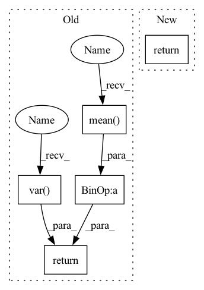

Pattern ID :37738
Before Change
self.g = nn.Parameter(torch.ones(dim))
def forward(self, x):
var = torch.var( x, dim = -1, unbiased = False, keepdim = True)
mean = torch.mean( x, dim = -1, keepdim = True)
return (x - mean) / (var + self.eps).sqrt() * self.g
// parallel with residual
// discovered by Wang et al + EleutherAI from GPT-J fameAfter Change
self.register_buffer("beta", torch.zeros(dim))
def forward(self, x):
return F.layer_norm(x, x.shape[-1:], self.gamma, self.beta)
// parallel with residual
// discovered by Wang et al + EleutherAI from GPT-J fameIn pattern: SUPERPATTERN
Frequency: 3
Non-data size: 5
Instances Fragment ID: 108377109
Project Name: lucidrains/palm-pytorch
Commit Name: 0832087f78006c10d52c0600c7377c5929568e0b
Time: 2022-04-04
Author: lucidrains@gmail.com
File Name: palm_pytorch/palm_pytorch.py
M Class Name: LayerNorm
N Class Name: LayerNorm
M Method Name: forward(2)
N Method Name: forward(2)
M Parent Class: nn.Module
N Parent Class: nn.Module
M File Name: palm_pytorch/palm_pytorch.py
N File Name: palm_pytorch/palm_pytorch.py
M Start Line: 18
M End Line: 20
N Start Line: 19
N End Line: 19
Before Change
def concordance_cc2(r1, r2):
mean_cent_prod = ((r1 - r1.mean()) * (r2 - r2.mean())).mean()
return (2 * mean_cent_prod) / (r1.var() + r2.var() + (r1.mean() - r2.mean() ) ** 2)
def mse(preds, labels):After Change
mean_cent_prod = ((r1 - r1_mean * (r2 - r2_mean))).mean(dim=-1, keepdims=True)
ccc = (2 * mean_cent_prod) / (r1.var(dim=-1, keepdims=True) + r2.var(dim=-1, keepdims=True) + (r1_mean - r2_mean) ** 2)
if reduction == "none":
return ccc
elif reduction == "mean":
return ccc.mean()
Fragment ID: 108377108
Project Name: sailordiary/m3f.pytorch
Commit Name: 165fc672841057e5f45726340675d39d9be4dcbc
Time: 2020-01-30
Author: me@sailorzhang.com
File Name: models/utils.py
M Class Name: AnonimousClass
N Class Name: AnonimousClass
M Method Name: concordance_cc2(3)
N Method Name: concordance_cc2(2)
M Parent Class:
N Parent Class:
M File Name: models/utils.py
N File Name: models/utils.py
M Start Line: 7
M End Line: 8
N Start Line: 6
N End Line: 19
Before Change
def forward(self, x):
eps = 1e-5 if x.dtype == torch.float32 else 1e-3
var = torch.var( x, dim = 1, unbiased = False, keepdim = True)
mean = torch.mean( x, dim = 1, keepdim = True)
return (x - mean) * var.clamp(min = eps).rsqrt() * self.g
class PreNorm(nn.Module):
def __init__(self, dim, fn):After Change
self.register_buffer("beta", torch.zeros(dim))
def forward(self, x):
return F.layer_norm(x, x.shape[-1:], self.gamma, self.beta)
// positional embeds
Fragment ID: 108377103
Project Name: lucidrains/recurrent-interface-network-pytorch
Commit Name: 627fa4e8c36a59b89f571cdfdb478a7b72cbf855
Time: 2022-12-24
Author: lucidrains@gmail.com
File Name: rin_pytorch/rin_pytorch.py
M Class Name: LayerNorm
N Class Name: LayerNorm
M Method Name: forward(2)
N Method Name: forward(2)
M Parent Class: nn.Module
N Parent Class: nn.Module
M File Name: rin_pytorch/rin_pytorch.py
N File Name: rin_pytorch/rin_pytorch.py
M Start Line: 83
M End Line: 86
N Start Line: 77
N End Line: 77